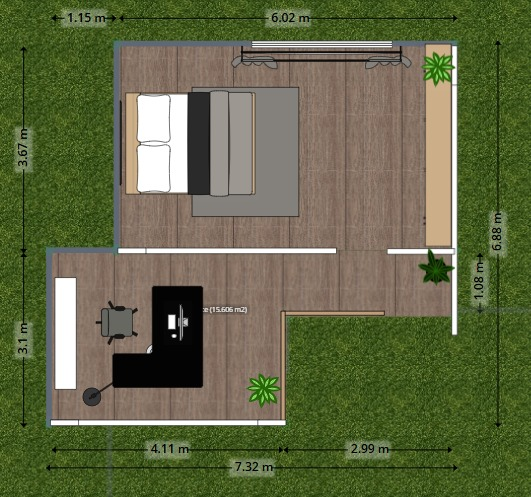
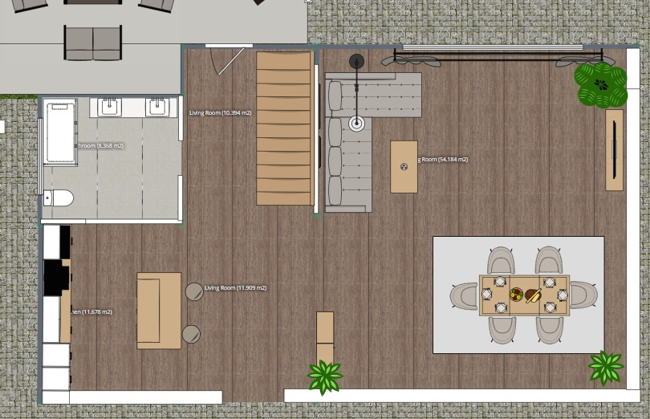
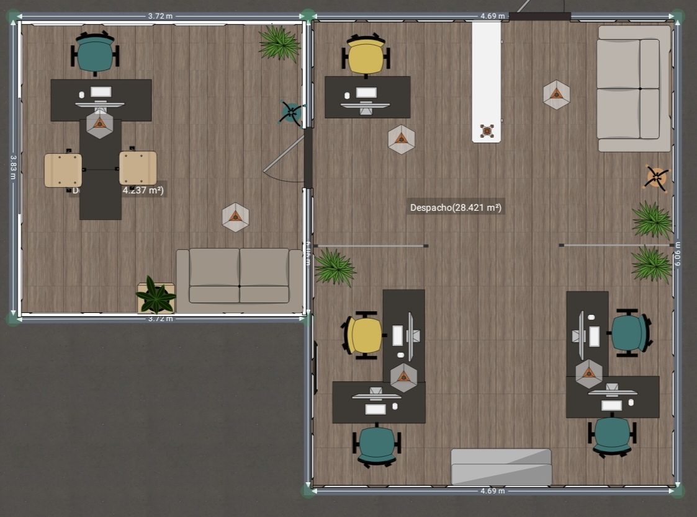

Proyecto de Domótica
La domótica es el conjunto de tecnologías que permiten automatizar y controlar de manera inteligente diferentes sistemas dentro de una vivienda, como la iluminación, la seguridad, la climatización y los electrodomésticos.
Gracias a estos avances, es posible mejorar la comodidad, optimizar el consumo de energía y aumentar la seguridad del hogar.
A lo largo de este trabajo se presentarán distintos dispositivos inteligentes que pueden implementarse en una casa, explicando su funcionamiento, utilidad y la forma en que se integran entre sí para crear un entorno moderno, eficiente y funcional.
Además, se analizará cómo estos sistemas pueden adaptarse a las necesidades de los usuarios, permitiendo un control remoto y automatizado desde dispositivos móviles o asistentes de voz. El objetivo principal es conocer cómo la tecnología puede transformar un hogar tradicional en un espacio inteligente, brindando soluciones prácticas que mejoran la calidad de vida de las personas.
Detecta fugas peligrosas y previene accidentes.
Controla todos los dispositivos mediante voz.
Detecta incendios y cambios ambientales.
Vigilancia en tiempo real desde el celular.
Acceso seguro sin llaves físicas.
Control total de iluminación.
Control de luz natural y temperatura.
Funciona incluso sin WiFi.
Regula temperatura y purifica el aire.
Limpieza automática del hogar.
Controlar el encendido y apagado de las luces.
Automatiza el llenado de tanques de agua, asegurando el suministro de agua potable.
Sistema de videovigilancia y comunicación.
Control de acceso inteligente mediante huella o códigos.
Capta el desplazamiento de personas o animales dentro de un área especifica.
Programa y controla las porciones de comida para tu mascota.
Prepara café automáticamente.
Impresión remota y monitoreo.
Automatización y productividad.
Control automático del aire.
Seguridad en la oficina.
Ahorro energético y comodidad.
1. Emergencia por Gas
Si se detecta en exceso en el gas: • Cerrar válvula de gas • Encender focos en rojo • Activar alarma • Emitir alerta por voz • Activar cámaras • Enviar notificación al celular
2. Si se ocasiona un Incendio
• Activar alarma • Abrir persianas • Encender luces • Emitir alerta por voz • Grabar video3.Todas las noches
3.Todas las noches • Cerrar puertas • Apagar luces • Activar sistema de seguridad • Ajustar temperatura4. Al Llegar a Casa
• Abrir cerradura • Encender luces • Subir persianas • Encender aire acondicionado3.Todas las noches
• Activar aspiradora • Evitar zonas ocupadas6. Riego Inteligente
• Activar riego si es necesario • Detener riego al nivel adecuado7. Control de Agua
• Activar bomba cuando el nivel es bajo • Apagar al llenarse8. Cuando suene el timbre Inteligente
• Mostrar video del visitante • Enviar notificación1. Inicio de Jornada
• Encender luces • Encender computadoras • Encender cafetera • Ajustar ventilación2. Modo Cierre
• Apagar luces • Apagar equipos (PC, impresora) • Activar cámaras y alarmas • Cerrar accesos3. Ahorro Energético Automático
• Detectar áreas vacías • Apagar luces • Apagar dispositivos • Reducir consumo4. Seguridad al Detectar Movimiento
• Activar cámaras • Encender luces • Enviar alerta • Grabar video5. Modo Reunión
• Ajustar iluminación • Reducir ruido • Ajustar temperatura • Preparar equiposAhora presentaremos el diseño de nuestra casa inteligente


Ahora presentaremos el diseño de nuestra oficina inteligente

Ahora les mostraremos en Qr para visualizar mejor
Aprendimos mucho de la domótica y de todos los cambios que puede hacer al momento de implementarlos en nuestro hogar, además nos ayudó para ir pensando en nuestro futuro y proyectar nuestra futura casa, haciendo planos, presupuestos y todo lo necesario para que quede bien nuestra casa con ayuda de la domótica ya que representa una gran innovación en la forma en que interactuamos con nuestro hogar, permitiendo automatizar y controlar diversos dispositivos de manera sencilla y eficiente.
A través de la integración de tecnologías inteligentes, es posible mejorar la comodidad, optimizar el consumo de energía y reforzar la seguridad en la vida diaria.
Además, la implementación de estos sistemas no solo facilita las tareas cotidianas, sino que también contribuye a crear espacios más modernos, funcionales y adaptados a las necesidades de cada persona.
Con el uso de dispositivos como iluminación inteligente, sensores, cámaras y electrodomésticos automatizados, se logra un mayor control y organización dentro del hogar.
Finalmente, la domótica continúa evolucionando, por lo que en el futuro será cada vez más accesible y común en los hogares, convirtiéndose en una herramienta fundamental para mejorar la calidad de vida y aprovechar al máximo los avances tecnológicos.